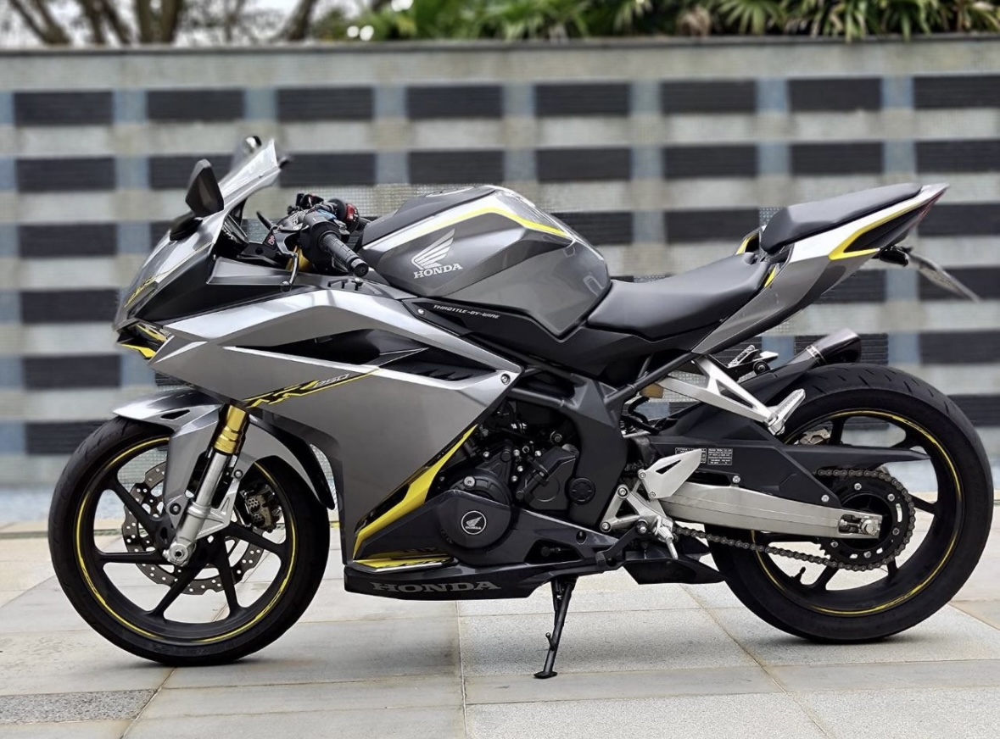
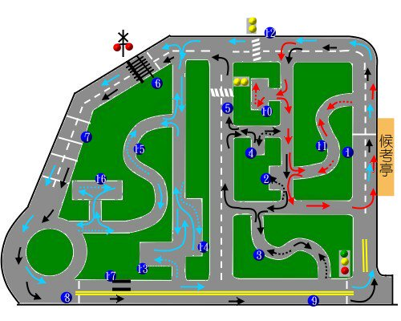
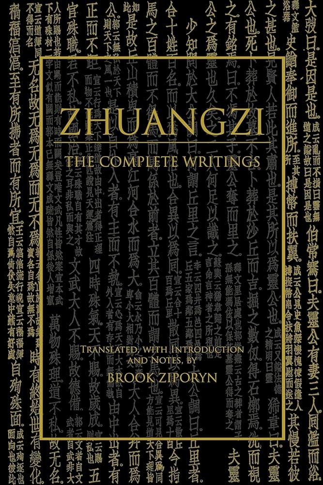

Driving school
May 8, 2026
The incident
In a desperate attempt to look cool as I was settling into Taiwan, I bought a small 250cc Honda CBR to ride between home, Chinese class, and cafes. However, I quickly realized that the roads in Taiwan were anything but cool. Apart from the murderous bus drivers who will gently smear you onto the wall of a FamilyMart and the always-underfoot aunties who have oven mitts tied to their handlebars, you also have to keep an eye out for taxi drivers. It's probably true in any city, not just Taipei, that taxi drivers are going to have a reputation for aggressive driving. But the other day I had an encounter that put Taiwanese taxis on a new level.

I was riding on a main road when a taxi pulled out in front of me, forcing me to slow down. A classic case of being cut off. As I went around the cab I replied with a classic case of honking my little CBR's horn. Apparently, that was a big mistake. The driver suddenly stepped on the accelerator to pass me and pull in front of my bike, then quickly slowed down to force me to the edge of the road. I went around him at the red light that had brought us both to a stop (in Taiwan motorcycles have a designated spot at the front of each intersection, for safety, so it's normal to pass standing traffic at a light). As I pulled past the passenger side, he rolled down his window and started shouting at me in a mix of Chinese and Taiwanese. I couldn't understand the guy at all. I turned to give him a shake of the head, partially in disapproval and partially to indicate my lack of understanding.
When the light changed, I made a right turn, but as I checked my mirror I realized he was following me. He started to pass me again, so I pulled off to the side of the road before the situation got out of hand. I jumped off my bike and, like a good 90s kid raised on the internet, pulled my phone from the bike mount to start recording him. Mind you, I had some adrenaline flowing through me at this point and was literally shaking in my riding boots. He lifted himself out of his taxi and approached me. I brandished my phone like a shield. Before he even reached me he started again in a mix of Taiwanese and Chinese, venting his frustrations at the use of my horn, spittle and little bits of red 檳榔 (betel nut) juice spewing all over the asphalt. I stood there doing my best imitation of a statue, mute and motionless (and nicely positioning his face and license plate in the frame). Once he'd realized I wasn't going to put up a fight, he quietly got back in his cab and drove away.
This experience nearly snowballed into something really serious. I mulled it over, and while of course one of my takeaways was to never use my horn again, I also walked away from the encounter with no hard feelings for this cabbie. Who was I, a (comparatively) rich American kid on a foreign-made motorcycle, to give him a hard time for pulling out a little too hastily on a road that he drives dozens of hours every day? I'm not forgiving him for his attempt to put us on the evening news in a road rage special report, but I knew I should have empathy for this guy whose life is way, way harder than mine. He has been shuttling passengers around in heavy rain and blazing sun since before I was born, all just to earn cab fare to pay for his food, housing, and healthcare. Compare that to me, sitting in my cushy 9th-story apartment earning a US salary by moving shapes around on a PowerPoint, never having done backbreaking work or lived paycheck-to-paycheck.
Drawing this comparison between us allowed me to foster a sense of compassion for the cabbie. His life is difficult, and mine is easy, so it's wrong of me to harbor ill-will towards him. This seems like a rational conclusion that many of us would have reached. However, my time in Taiwan has exposed me to some other ways of looking at the situation. Let me offer two other perspectives.
The sun illuminates all
I got my motorcycle license my first year in Taiwan. As I began to spend more of my weekend hours driving away from Taipei and towards the mountains or beaches, I found the 250cc limit on my license was too restrictive. This led me to sign up for the car license program, the program that all Taiwanese must do to get their two-by-four ticket to freedom. Now the silly thing about this is I already know how to drive. When I was fifteen my dad taught me how to drive stick on the dirt roads of my neighborhood in a forest green Subaru Outback (that's not meant to sound cool). But in Taiwan, due to reciprocity laws, some U.S. states aren't allowed to switch their driver's licenses for Taiwanese ones. So, there I was: sitting through ~50 hours of driving school, almost all of which is done on the Circuit.
In Taiwan the driving test is quite famous – primarily because it's a huge pain. You have to pass a written test, a road test, and then a practical test on the Circuit. The Circuit is a small, circular roadway designed to ensure a driver can park a car two ways, drive an S-shaped curve forward and backwards, and won't run over any pedestrians or get hit by a train.

The driving program that prepares you for the test is a well-known rite of passage. In fact, there's a Taiwanese film where the protagonist is a driving school instructor in Taipei. It's called 陽光普照，which roughly translates to the sun illuminates all – although the English title is just A Sun. I thought about this film constantly while I was on the Circuit, and one evening after class I gave it a rewatch.
I was surprised by a monologue in the film which I had forgotten. It describes the philosophy of 阿豪 (A-hao). His thoughts are also what give the film its title. He says:
The fairest thing in the world is the sun. Regardless of latitude, every place on Earth, throughout the year, receives equal spans of day and night. We went to the zoo a few days ago. The sun was blazing so strongly the animals couldn't stand it. They all found ways to hide in the shade. I had a hazy feeling I couldn't put into words. I also wished, just like those animals, that I could hide in the shade.2
阿豪 is the eldest son in his family and is expected to finish medical school, support his challenged younger brother, and act as a bridge between his quarreling parents. This is a lot of pressure. His metaphor therefore interprets the warmth of the sun as something more oppressive: a heavy, harsh light spread equally across the world. The pressure from one's parents is a common theme in Taiwanese films. While the crux of this quote is 阿豪 saying he cannot avoid his burdens ("hide in the shade"), the element of this metaphor that really stuck out to me was the emphasis on fairness. 阿豪 doesn't say that the sun's light singled him out, instead he says that this distribution of light is equal. This seems to suggest that the burden he bears is not more than any other person, it's just that he cannot handle it.
I interpret this as 阿豪 saying each person on earth must confront the same challenges. His challenges come in the form of medical school and family dysfunction, and while the obstacles that you and I face may be different in name they are equal in difficulty. This idea plays out in the film as each member of the family confronts and overcomes their own challenges.
Now let me revisit that incident with the cab driver. My initial reaction to the event was: I should have compassion for this person whose life has been harder than mine. But this conflicts with the philosophy of 阿豪, who would suggest that the sunlight shines equally on the cabbie and me. Said another way, this cabbie and I will face the same great challenges, be it a terrible illness, a struggle to find purpose, or the death of a friend. According to 阿豪, to compare the challenges of one life to another is meaningless because there is no difference. I expect that these challenges will present themselves in different ways, but they are still equally there. So, while I believe that fostering compassion for the cabbie was the right reaction, 阿豪 would suggest I reached that answer by walking down the wrong path.
It may seem that I'm framing this metaphor in a way that devalues systemic inequality. I want to be clear that I'm not suggesting that. I am only applying 阿豪's philosophy on the individual level. There are obvious examples of how different circumstances of birth and fortune change the shape of our lives; there are concentrations of wealth and safety in certain latitudes and not others. I'm not saying those inequalities don't exist, and I would add that I strongly believe we should work to resolve those. The point of raising 阿豪's metaphor is to highlight a perspective that suggests the individual experience of life is the same for each of us. We are all presented with a fair distribution of challenges.
Daoist thunderbolt
During my time at the driving school, I felt I was somewhat living in 陽光普照 (the film I just mentioned). Partially because the monotonous and Kafkaesque process of the bureaucratic course was well-illustrated in the film, but also because one of the driving instructors really seemed to look like 陳以文 (Chen Yi-Wen, the protagonist). In Taiwanese driving school, each student is assigned a teacher who goes with them for road practice and guides them through the first couple rounds on the Circuit. Although not the Chen lookalike, my teacher was a friendly-enough guy, and I managed to strike up a conversation with him during our practice sessions. He quickly revealed himself to be somewhat of a sage.
薛老師 (Teacher Xue) told me he worked tirelessly. A normal shift for a driving instructor is eight hours in the morning or afternoon. But not for 薛老師. He was doing a shift and a half 5-6 days a week (something like 60-70 hours), primarily motivated by a desire for money. He had also developed a strong interest in the study of the 道 (Daoism). In his free time away from the driving school, he often found himself reading the classic texts. Why? Because he had a lot of questions about fairness. He wanted to know why some people were born with four limbs and others three, why some were born beautiful and others ugly, and in his own circumstances, why he was wearing himself to the bone at the driving school while some fat cats were born straight into money.
I checked my left and right rear mirrors, signaled a left turn, and smoothly pulled into the outside lane. He elaborated further. The Daoist texts seemed to indicate that 薛老師's question was the wrong one. He was comparing himself to others, a practice which Daoism considers fruitless. By asking "why?" he was internalizing the idea that because of his number of limbs, the size of his wallet, or the make of his clothes, he was worse or better than another person. The texts suggested that his question of equality devalued his intrinsic qualities and assigned worth only in accordance with the superficial.
In the 莊子 (the Zhuangzi, one of the foundational texts of philosophical3 Daoism), the collection's titular author states that the 道 (the Dao or Way or Course) flows through all things. Well, the 道 was certainly flowing through the streets of New Taipei City that morning. To have your driving school instructor expound on the foundational Daoist texts was like being struck by a thunderbolt on a sunny day, mostly because driving instructor-cum-philosopher wasn't on my bingo card, but also because it landed close to home. I happened to have a copy of the 莊子 on my coffee table that I was slowly working my way through. Sometimes coincidence is your sub-conscious screaming for attention.
The 道
The 莊子 is really an incredible text. The full text is organized into the 內篇 (Inner Chapters), 外篇 (Outer Chapters), and 雜篇 (Miscellaneous Chapters)4. The Inner Chapters, which are attributed to Zhuangzi himself, are rich in content and profoundly poetic. But they are also hilarious. 莊子 has this great sense of humor which shines through 2,300 years of history. Take, for example, the way he describes the various physically disabled characters in the text.
Hunchback Limpleg, the lipless cripple, presented himself to Duke Ling of Wei, who was so delighted with him that when he saw the unimpaired, their necks looked freakishly long to him. Jarsize Goiter presented himself to Duke Huan of Qi, and in that case too, the ruler was so delighted that when he saw the unimpaired, their necks looked freakishly long to him. Thus, where the intrinsic virtuosities excel, the physical form is forgotten.5

You couldn't write the 莊子 like that today, and if I were a philosopher I would be cautious to use names like Hunchback Limpleg. However, it's clear the author is trying to inject some humor while also making the point that the deformities of these characters are irrelevant in a judgement of their character ("where the intrinsic virtuosities excel, the physical form is forgotten…").
Another example of a character who is physically disabled but strong in 精神 (spirit) is named 申徒嘉6. In the 莊子 he is quoted:
Many two-footed people laugh at me for having one foot, which always used to infuriate me. But as soon as I arrived here at our master's place, everything fell away, bringing me back to where I'd started from. It's as if the master cleansed me with his goodness without my even realizing it. I have studied under him for nineteen years and never once in all that time have I been aware that I was one-footed. Here you and I have been wandering together on the inner side of the corporeal – is it not wrong of you to seek me on its outer side?7
申徒嘉 suggests that once he was able to stop comparing himself to others, he also let go of his sense of one-footedness as a disability ("used to infuriate me… everything fell away"). He found inner peace through the practice of letting comparison go.
I bring up the teachings of my driving instructor and the 莊子 as different examples of the same facet of Daoism. All these characters illustrate that the physical form or the external qualities do not define a person. Jarsize goiters, lipless cripples, and toeless incels be damned, because it is only the intrinsic virtues that really matter. Where 阿豪's argument was centered around the fairness of our lives, the Daoist perspective reduces the question of fairness to nothing. It is simply a question that is not worth asking.
Now let me again return to the incident with the cab driver. The comparison I made between the cab driver and myself was only a measure of our external qualities: our nationalities, our incomes, and the content of our jobs. Through Daoist eyes, this comparison is worthless. It resulted in pity, which became the seed of compassion. That's not a bad outcome but it is a treacherous path. The Daoists would instead suggest that I judge this person not by his external qualities but by his internal ones. Maybe he was defending his turf, or standing up for what he believed in. Those are all admirable causes and a reasonable source from which I could develop compassion.
I want to again point out that this is not a critique of social inequality. The Inner Chapters of the 莊子 present a philosophical framework for an individual to apply within the bounds of their own life. My argument has little to do with resolving the greater questions of equality across geographies and cultures, and is only pointed at the way a person should approach their individual challenges.
Consider this an introduction to fairness through the perspective of 陽光普照 and philosophical Daoism. Each school of thought presents a way to shed the judgement of comparison without losing the end product of compassion. Perhaps there are places in your life where you can set 阿豪, 薛老師, or 莊子 to work. In any case, I hope that the next time you square off with a cabbie, you'll at least be better equipped to defuse the situation.
- Taipei City Motor Vehicles Office, tpcmv.thb.gov.tw. ↑
- A Sun (陽光普照), directed by Chung Mong-hong (鍾孟宏), 2019. The monologue is spoken by A-hao (阿豪), the eldest son, played by Greg Hsu (許光漢). ↑
- Philosophical Daoism and spiritual Daoism are fundamentally different things. Both celebrate 老子 (Laozi) as the father of their movement, but philosophical Daoism treats him as a philosopher while spiritual Daoism literally deifies him. ↑
- The inner chapters are, in my opinion, the most interesting. They frame Daoist philosophy for the individual and explain how to lead a fulfilling life. The Outer and Miscellaneous chapters were likely not written by 莊子 himself, and carry his philosophy into the realm of politics (i.e., how to use Daoism to create a system of government). ↑
- Brook Ziporyn, trans., Zhuangzi: The Complete Writings (Hackett, 2020), Chapter Five: Fragmentations Betokening Full Virtuosity. ↑
- This name is also a bit of a pun. 申 sounds like 伸, which is the verb meaning to extend, such as 伸手 (to raise your hand) or 請將手伸進車內 (to keep your hands inside the vehicle when moving). 徒 is someone who travels by foot, such as the characters in Journey to the West called 徒弟 (disciples). The character also looks like 走, which means to walk. 嘉 carries the meaning of auspicious. Together the name reminds the reader of a sage taking long strides on strong legs, which is ironic because 申徒嘉 only has one foot. ↑
- Brook Ziporyn, trans., Zhuangzi: The Complete Writings (Hackett, 2020), Chapter Five: Fragmentations Betokening Full Virtuosity. ↑